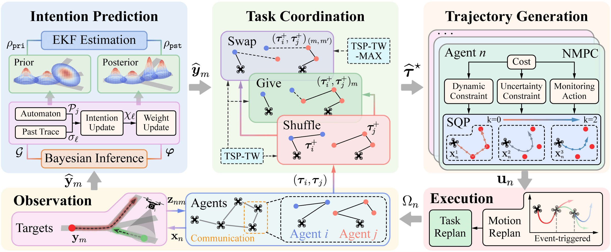
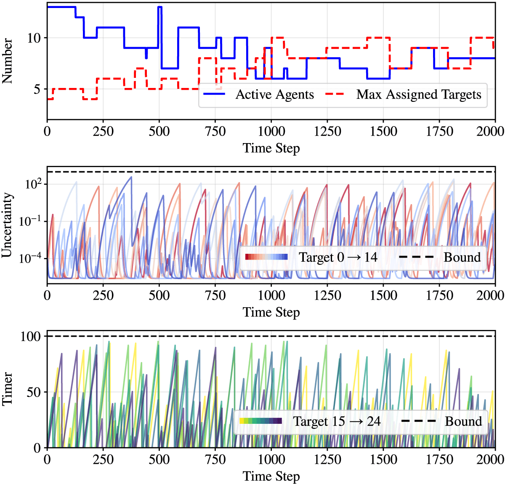
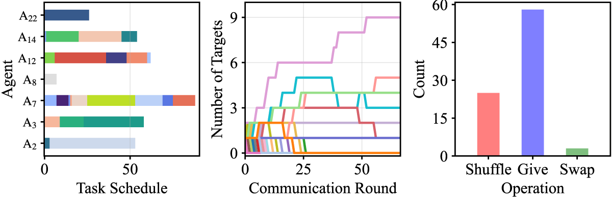
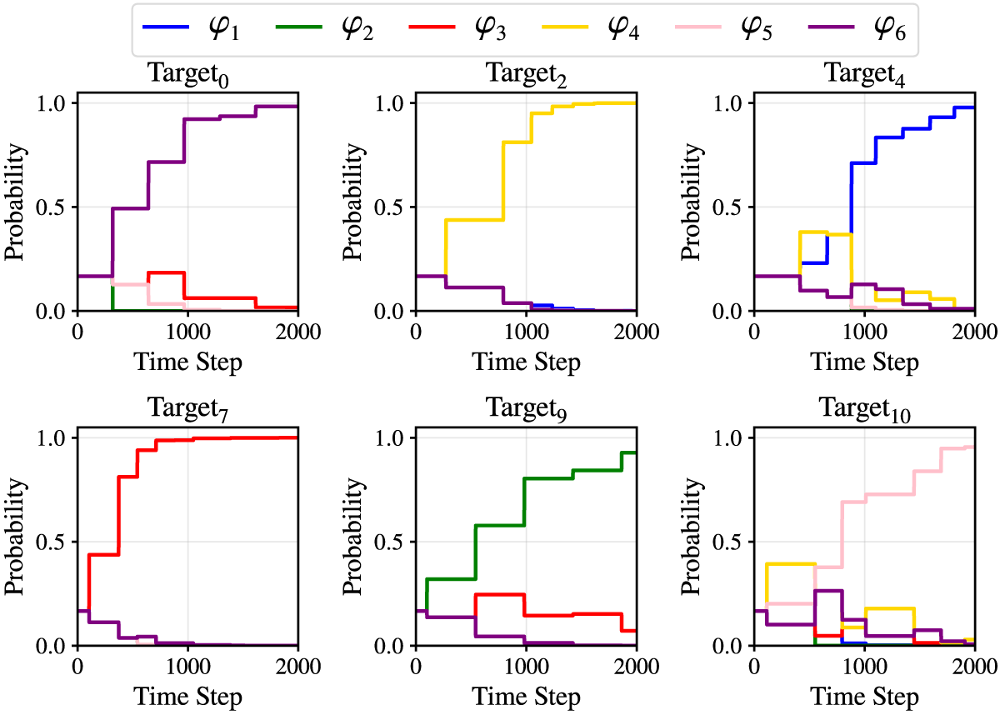
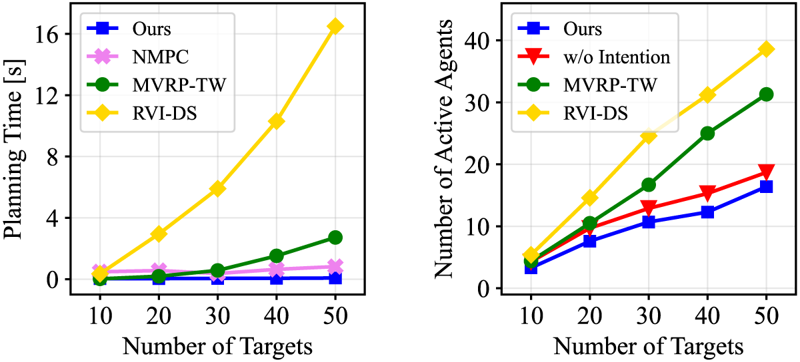

Long-term monitoring of large areas with a minimum number of agents is a prerequisite for many applications such as surveillance, search and rescue. Fleets of unmanned aerial and ground vehicles have been deployed to monitor numerous dynamic targets in a collaborative way. It is a challenging problem requiring online task coordination, information fusion, and motion control. The majority of existing works either assume a passive all-to-all observation model to minimize the summed uncertainties of all targets, or optimize over the joint discrete actions while neglecting the dynamic constraints of the agents and unknown behaviors of the targets. Instead, the agents may be restricted to actively track only a limited number of targets simultaneously, while the targets move within a road network to accomplish unknown high-level temporal tasks. This work proposes an integrated and distributed task and motion coordination algorithm for long-term monitoring tasks with a minimum fleet, which consists of: (I) the online Bayesian inference of task-level intention of each target modeled as temporal formulas; (II) the distributed communication and coordination algorithm based on local Nash stability, given the intention-aware Kalman prediction of target trajectories with uncertainty measure; and (III) the event-triggered nonlinear model predictive controller to optimize the agent trajectories, subject to the uncertainty bounds of its assigned targets. It is shown that the estimation uncertainty for all targets is explicitly bounded at all time; the inference of target intention converges to the actual tasks; and the agents switch between active and inactive roles online. The proposed methods are validated via large-scale simulations of up to 50 agents and targets under various configurations.




